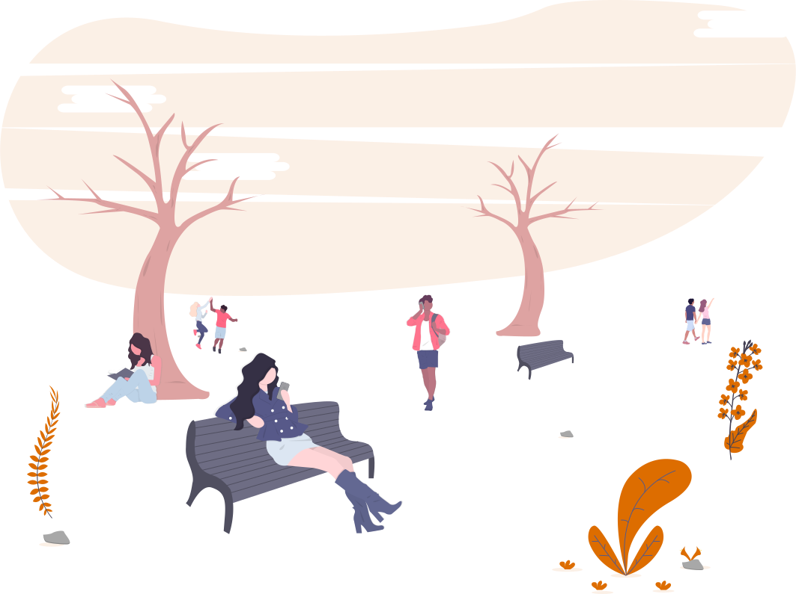

Apresentação
O curso de Ciência da Computação da UFFS pretende, através de bases sólidas de computação, formar profissionais capazes de desempenhar um papel importante em áreas da Tecnologia da Informação (TI), tanto na indústria quanto na academia.

Modalidades
O curso oferece graduação bacharelado presencial em dois formatos: vespertino (tarde) e noturno.

Bacharelado vespertino (50 vagas/ano)
Duração mínima de 8 semestres com aulas durante a tarde. Em caros excepcionais, existem aulas durante a manhã e noite. São ofertadas 50 vagas anuais para o bacharelado vespertino, com ingresso no primeiro semestre (meados de março).
Bacharelado noturno (50 vagas/ano)
Duração mínima de 10 semestres com aulas durante a noite. Em caros excepcionais, existem aulas durante a manhã e tarde. São ofertadas 50 vagas anuais para o bacharelado noturno, com ingresso no segundo semestre (meados de agosto).
Informações gerais
O curso oferece várias opções para o estudante se aprofundar: banco de dados, computação gráfica, redes de computadores, engenharia de software, hardware e teoria da computação. Todos os professores se dedicam integralmente ao curso e todos possuem no mínimo o título de mestre, sendo que aproximadamente a metade tem o título de doutor. Esse perfil dos professores faz com que os estudantes tenham contato com assuntos de ponta da computação. Os estudantes têm acesso aos projetos de pesquisa e de extensão do curso, experiência profissional através do projeto FronteiraTec, além de várias opções de estágios em empresas da região.
Perfil do egresso
O egresso do Bacharelado em Ciência da Computação da UFFS deverá possuir um conjunto de competências, habilidades e atitudes adquiridas durante a realização do curso. Por definição, o bacharel em Ciência da Computação deve ser um profissional qualificado para a pesquisa e o desenvolvimento na área de computação, para o projeto e construção de software básico e também para o uso de sistemas computadorizados em outras áreas da atividade humana, a fim de viabilizar ou aumentar a produtividade e a qualidade de todos os tipos de procedimentos. Na UFFS, todo egresso deve ser um profissional com domínio e capacidade para trabalhar na área da Computação, desenvolvendo projetos de computadores e sistemas de computação, programas e sistemas de informação. As características desejáveis dos egressos do curso de Ciência da Computação da UFFS são as seguintes:
-
Capacidade para aplicar seus conhecimentos de forma independente e inovadora, acompanhando a evolução do setor e contribuindo na busca de soluções nas diferentes áreas aplicadas;
-
Formação humanística que permita a compreensão do mundo e da sociedade, assim como o desenvolvimento de habilidades de trabalho em grupo e de comunicação e expressão;
-
Preocupação constante com a atualização tecnológica;
-
Capacidade para construção de soluções de problemas com base científica;
-
Capacidade de modelagem e especificação de soluções computacionais para diversos tipos de problemas;
-
Liderança de projetos e implementação de sistemas de computação; e
-
Senso crítico para o desenvolvimento de novas maneiras de se utilizar computadores e sistemas computacionais.
Para atender ao perfil profissional definido, as atividades do curso priorizam o exercício dos seguintes requisitos inerentes ao desempenho da profissão:
-
Método e disciplina de trabalho;
-
Raciocínio lógico e abstrato;
-
Capacidade de trabalho em equipe;
-
Criatividade, produtividade e iniciativa;
-
Disposição para efetuar trabalho complexo e minucioso;
-
Compromisso com o desenvolvimento tecnológico;
-
Compromisso com o ser humano; e
-
Senso crítico, seriedade e responsabilidade.